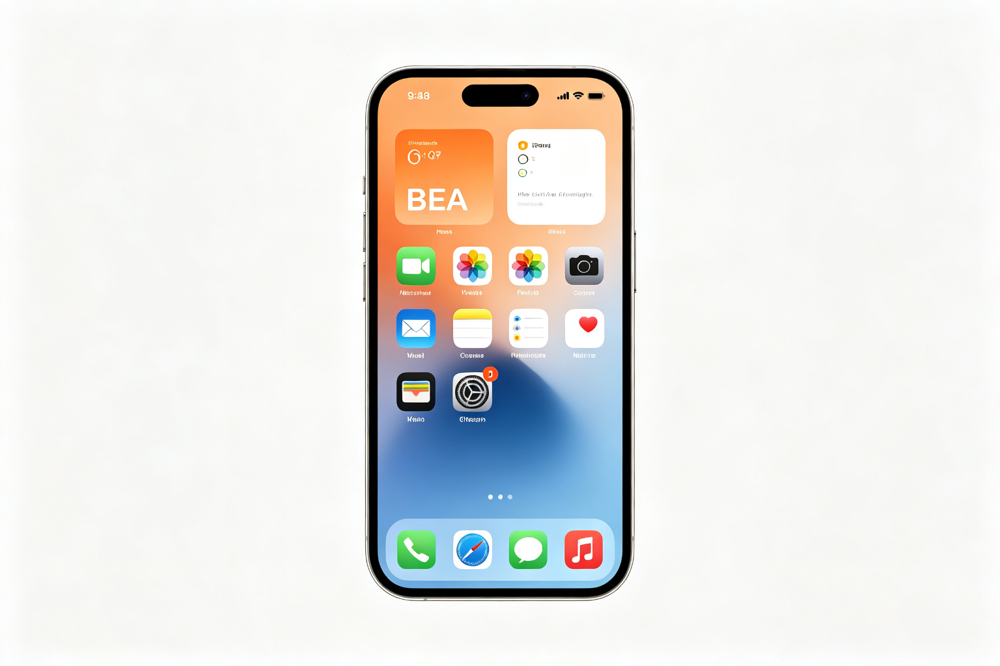

Apple iOS 界面设计 · BEA 双极情绪美学深度分析
分析对象：Apple iOS 17 系统界面设计（iPhone） 分析方法：BEA 双极情绪美学六步法 分析时间：2026-09-13 分析师：BEA 工具生成
一、情绪基调
iOS 界面设计是数字界面领域"亲和精致"范式的教科书。它的核心感受是舒适、精致、可信赖——大面积圆角和柔和色彩带来亲和安全，而精准的排版、克制的动效和精密的细节注入锐利提神，做到"远看柔和、近看精密"。
- 主导范式：💎 亲和精致
- W(T) 危极权重估计：0.22
- 第一情绪：舒适、精致、可信赖、想长期使用
二、双极构成拆解
亲极元素（P+，安全/愉悦）
| 维度 | 元素 | 极性强度 | 作用 |
|---|---|---|---|
| 组件形 | 全面圆角（卡片12-16px、按钮8-12px、图标圆角） | P+ 7 | 核心亲和源，无攻击性，握持舒适 |
| 色彩 | 低饱和系统色、柔和灰阶、自然色系 | P+ 6 | 柔和不刺眼，长期使用不疲劳 |
| 动效 | 缓入缓出、物理惯性、流畅连续 | P+ 7 | 自然舒适，符合直觉，无突兀感 |
| 布局 | 充足留白、清晰层级、呼吸感 | P+ 6 | 不拥挤，认知轻松，视觉舒适 |
| 反馈 | 即时一致、触觉反馈（Taptic Engine） | P+ 6 | 可掌控感，操作有回应，安全 |
危极元素（T−，警觉/提神）
| 维度 | 元素 | 极性强度 | 作用 |
|---|---|---|---|
| 字体 | SF Pro 精准字重、锐利笔画、精确字距 | T− 5 | 精密感，提神，区别于"圆润甜腻" |
| 关键按钮 | 主行动按钮高对比（蓝色/深色填充） | T− 6 | 捕获注意，引导操作，制造焦点 |
| 图标 | 统一栅格、精准几何、锐利线条细节 | T− 5 | 精密感，专业度，微差补偿 |
| 动效 | 关键时刻的轻微弹性/加速度变化 | T− 4 | 提神，增加趣味，避免单调 |
| 警示 | 错误/危险状态的红色高对比 | T− 7 | 必要警示，捕获注意，安全功能 |
主辅比与层级策略
- 主辅比：亲极约78%，危极约22%——典型的亲和精致配比
- 层级策略：微差补偿（高级型）——宏观柔和（整体圆角+柔色+留白），微观补偿（字体锐利+图标精密+按钮高对比），远看亲和友好，近看精密有细节——这是高级界面设计的标准结构。
三、定位：张力 × 秩序 象限
🏆 高张力 × 高秩序 = 美感黄金区（亲和象限）
- 张力：中（22%危极，集中在关键焦点和细节）
- 秩序：极高（统一设计语言、精确栅格、清晰层级、一致动效）
- 说明：iOS 的张力不是"刺激"，而是"精致"——用精准的细节和克制的对比提神，而不是用强对比和锐利形状攻击。高秩序保证了所有元素在统一的语言下协同，微差补偿保证了"亲和而不甜腻，精致而不冷漠"。
四、BEA 四维评分卡
| 维度 | 得分 | 满分 | 评价 |
|---|---|---|---|
| 双极张力 | 21 | 25 | 亲和与锐利配比精准，微差补偿到位，张力水平匹配长期使用场景 |
| 结构秩序 | 25 | 25 | 统一设计语言、精确栅格、清晰层级、一致动效，秩序感堪称完美 |
| 阈值安全 | 24 | 25 | 无本能红线，长期使用不疲劳，警示色在安全框架内，认知可消化 |
| 语境适配 | 24 | 25 | 完美匹配消费电子长期贴身使用场景，跨应用一致性强，无障碍友好 |
| 总分 | 94 | 100 | 卓越作品·界面设计典范 |
五、核心优点
- 微差补偿的界面典范：整体圆角柔色（P+），但字体锐利、图标精密、按钮高对比（T−），远看亲和近看精密——BEA"高级感公式"的界面诠释。
- 注意力预算原则：一屏内高危极元素（高对比按钮、警示色）不超过1-2个，处处强调等于无强调——iOS 严格执行这一原则，界面始终清晰有焦点。
- 动效遵循物理惯性：缓入缓出、连续轨迹、轻微弹性，违惯性骤变被潜意识读作"故障/威胁"，iOS 动效完全符合物理直觉，舒适自然。
- 跨模态一致：视觉（圆角柔色）、触觉（Taptic Engine 柔和反馈）、听觉（柔和提示音）三通道极性协同，全通道亲和——高级体验的标志。
- 阈值精准控制：长期贴身物，危极严格控制在22%以内，强对比只用于真正需要捕获注意的元素（主行动按钮、警示），避免长期使用的认知疲劳。
六、可优化方向（锦上添花）
- 个性化张力调节：当前 iOS 的张力水平是"大众最优"，但专业用户可能希望更高张力（更锐利的字体、更强的对比），可增加"美学风格"调节选项（柔和/标准/锐利），让用户自定义 W(T)。
- 暗色模式的张力平衡：暗色模式下，纯黑背景+高对比白色文字的危极强度比亮色模式高，可适当降低暗色模式下的对比度，保持跨模式的 W(T) 一致。
- 动态张力调节：根据使用场景（工作/娱乐/夜间）自动调节界面张力，工作模式提高清晰度（微增危极），夜间模式降低刺激（微增亲极）。
七、总结
Apple iOS 界面设计是BEA亲和精致范式的最高典范之一，总分94/100。它证明了：最舒适的体验不是"全圆角全柔色"的甜腻，而是"宏观柔和+微观精密"的微差补偿；最精致的界面不是"处处强调"的拥挤，而是"严格注意力预算"的克制。
对界面设计师的启示： - 长期贴身物，危极控制在20%左右，集中在高价值细节 - 微差补偿是高级感的标准结构——远看亲和，近看精密 - 动效遵循物理惯性，违惯性骤变会被潜意识读作故障 - 一屏内高危极元素不超过1-2个，处处强调等于无强调 - 跨模态（视/触/听）极性协同，全通道一致才是真高级
本报告由 BEA 双极情绪美学分析工具生成 · 理论作者：星空本空 · CC BY 4.0